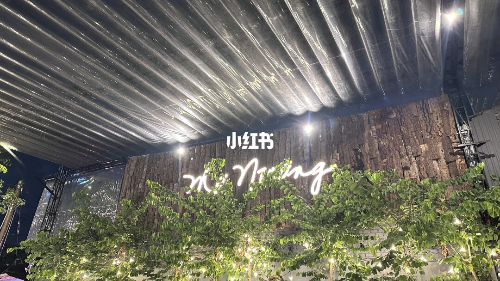
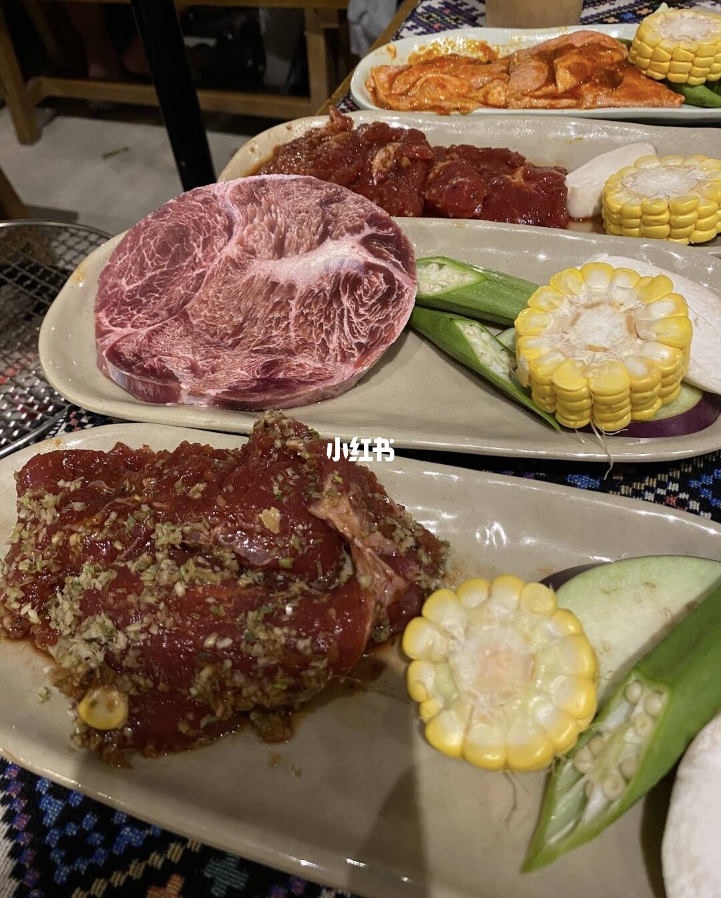
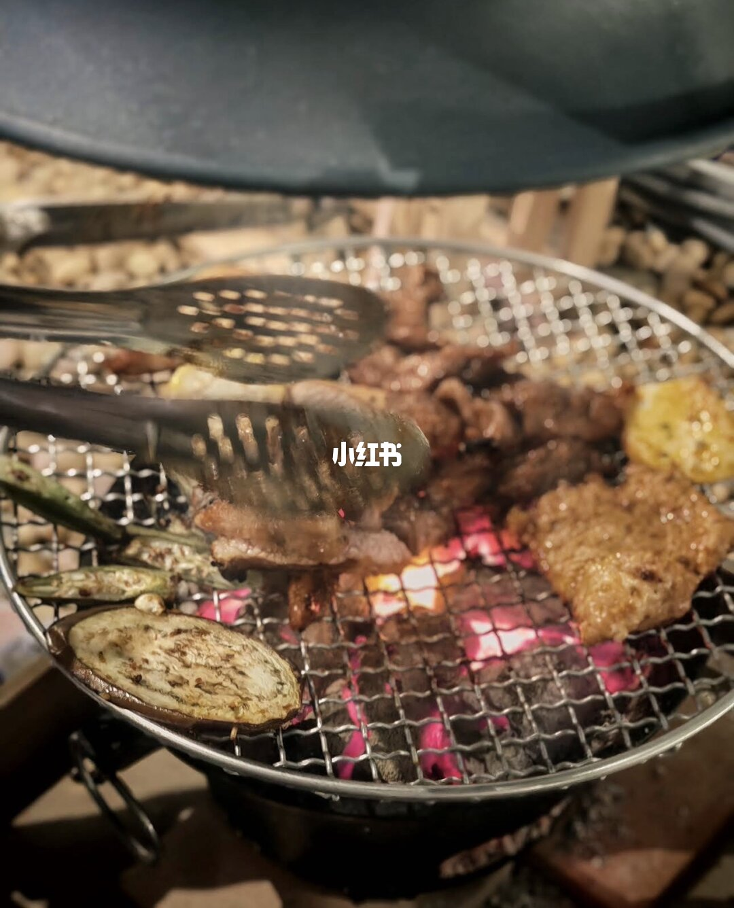
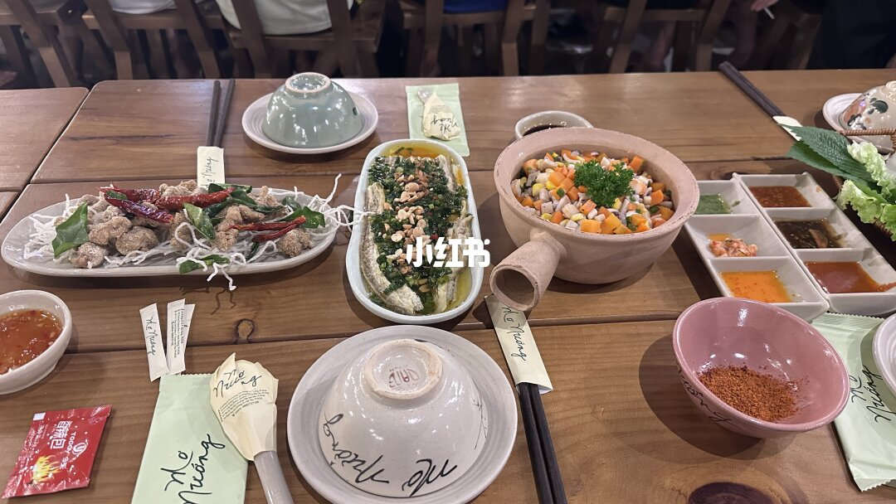
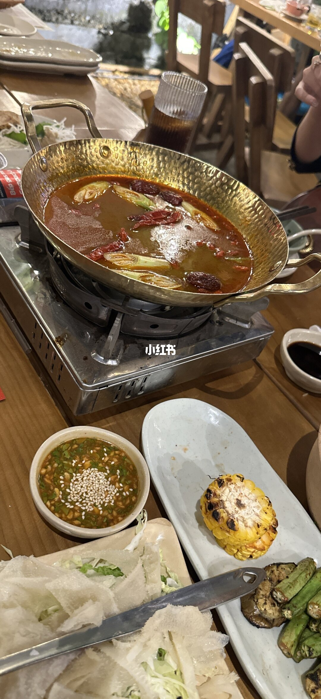
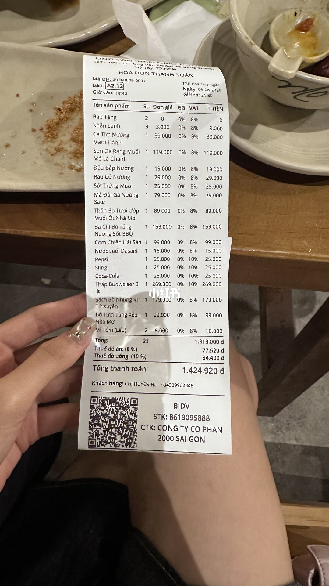
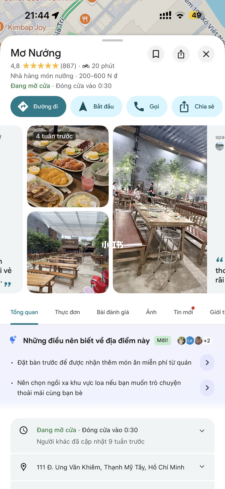

美食筆記 · 來自 Obsidian
越南燒烤（胡志明平盛郡）｜Mơ Nướng

地址111 Đ. Ung Văn Khiêm, Thạnh Mỹ Tây, Hồ Chí Minh
🔥 前幾天去了一家越南燒烤店，位置在胡志明市平盛郡，附近有不少大學，整體氛圍很熱鬧～
👫 我們4 5個人，點了幾道菜，可惜吃到一半才發現完全忘記拍照了😂
點了：
🥩 厚切五花肉
🥩 牛肩肉
🥘 牛百葉火鍋
🍚 越南炒飯
🍺 還有一大桶啤酒……
燒烤都是店員幫忙烤的，這點真的很方便！不用自己顧著烤，坐著吃就好～
整體來說味道都不錯，屬於比較地道的越南燒烤口味，適合朋友一起聚餐。
💰 吃下來大概145萬越南盾左右！（人均不到30萬越盾）
📍 店家資訊（Google Maps）
- 店名：Mơ Nướng（越南燒烤，mo nuong 諧音「烤肉」）
- 地址：111 Đ. Ung Văn Khiêm, Thạnh Mỹ Tây, Hồ Chí Minh
- 營業時間：每日 10:30 – 00:30
- 評分：4.8 星（870 則評論）
- 電話：0862 727 199
- 網站：monuong.com
- 結帳單：總金額 1,424,920đ（含 8% 稅 77,520đ + 10% 服務費 34,400đ），與正文「145 萬越盾」吻合
- 菜色（從圖中確認）：厚切生牛肉（油花漂亮）、醃製牛肉（蒜蓉醬料）、烤魚、秋葵/玉米/茄子蔬菜串、金鍋牛百葉火鍋（紅油湯底）、烤玉米、薄餅、越南炒飯
- Google Maps 截圖：4.8 分（867 則）、營業至凌晨 0:30、「提前訂位免費送菜」、想安靜聊天建議選遠離喇叭的區域
- 氛圍：炭火現烤、店員幫烤、木質裝潢夜晚點燈，適合朋友聚餐
📸 實拍






📌 資料來源：內容與照片來自小紅書實地帖文（Pebble 擷取至 Obsidian，2026-10）。
營業時間、價格與電話可能變動，出發前建議以現場或官方最新資訊為準。